Kurzanleitung für Orga-Mitglieder und Orga-Admins: Hangar von RSI übernehmen, die Flotte der eigenen Orga sehen, Einsätze planen und die Orga über Discord verwalten.
Der Community-Hangar zeigt, welche Schiffe und Rüstungen deine Orga besitzt. Jedes Mitglied überträgt seinen Hangar mit einem Klick von der RSI-Webseite. Daraus entstehen:
Mehrere Orgas können dieselbe App nutzen. Jede Orga sieht nur ihre eigenen Daten, andere Orgas und nicht angemeldete Besucher sehen nichts davon.
Die Anmeldung läuft über Discord („Mit Discord anmelden“). Ein eigenes Passwort für die App gibt es nicht. Discord fragt beim ersten Login, ob die App deine Server und deine Rollen darauf sehen darf; daran erkennt sie, zu welcher Orga du gehörst.
Dein Hangar kommt ausschließlich von der RSI-Webseite. Dafür gibt es ein Lesezeichen („Bookmarklet“). Du brauchst keine Browser-Erweiterung und keinen Schlüssel; die App nutzt deine normale Anmeldung.
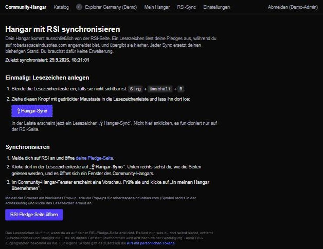
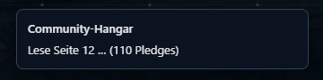
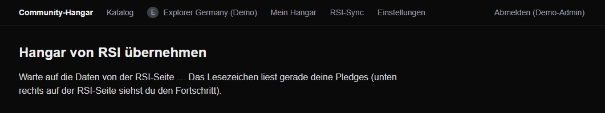
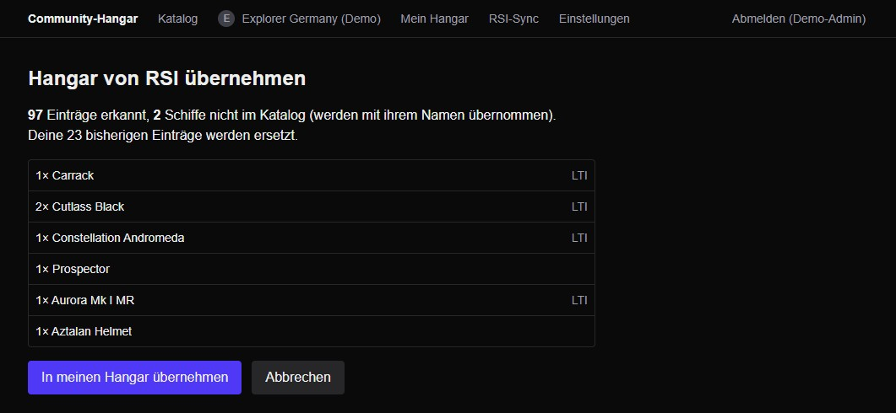
Zeigt deinen Besitz nach Bereichen: Schiffe und Rüstungen (mit Hersteller, Anzahl und LTI) sowie Upgrades, Paints und Sonstiges (Loot, Ausrüstung, Dekoration und Ähnliches). Dazu steht dort der Zeitpunkt des letzten Syncs. „Jetzt synchronisieren“ öffnet direkt deine RSI-Pledge-Seite.
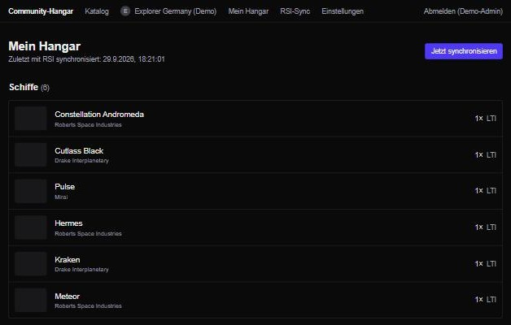
Jede Orga hat einen eigenen Bereich mit den Reitern Übersicht, Mitglieder, Orga Hangar, Statistik, Planung und (nur für Admins) Orga verwalten. Gehörst du mehreren Orgas an, wählst du oben im Menü Orgas die gewünschte aus.
Wer seinen Hangar synchronisiert oder eine Errungenschaft erreicht hat.
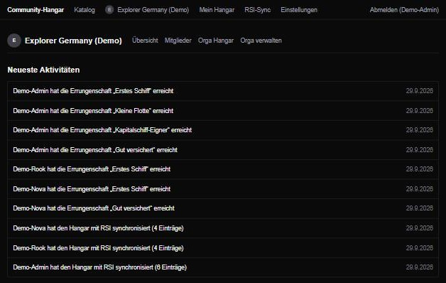
Alle bestätigten Mitglieder, die sich in der App angemeldet haben, mit Schiffs- und Errungenschaftszahl. Wer seinen Hangar auf „Nur ich“ gestellt hat, erscheint als „Hangar privat“. Ein Klick öffnet das Profil mit Hangar und Errungenschaften.
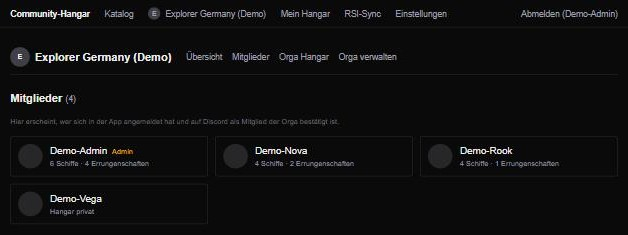
Die gesamte Flotte der Orga: jedes Modell mit Anzahl, sortiert nach Häufigkeit. Die Liste ist anonym: Sie zählt die Schiffe aller Mitglieder, auch privater, zeigt aber nie, wem ein Schiff gehört.
Filter: Über der Liste grenzt du nach Karriere, Rolle, Status, Größenklasse und Größe ein und kannst Crew min. (Platz für mindestens so viele) und Crew max. (flugfähig mit höchstens so vielen) angeben. Die Filter lassen sich kombinieren; „Zurücksetzen“ zeigt wieder alles. Schiffe ohne Katalogdaten erscheinen nur ohne Filter.
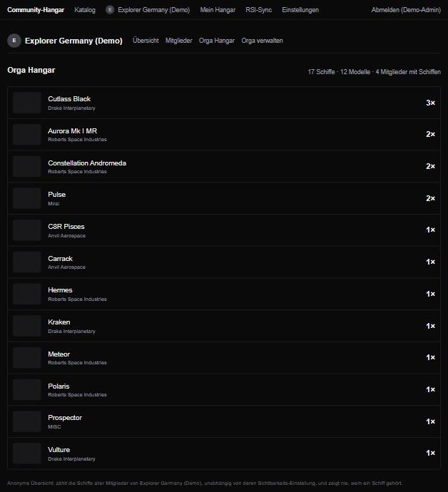
Der Reiter Planung zeigt einen Monatskalender und darunter die kommenden Events. Alle Orga-Mitglieder sehen die Events ihrer Orga; andere Orgas sehen sie nicht. Alle Zeiten gelten in deutscher Zeit (Europe/Berlin).
So legst du ein Event an (Knopf „Event anlegen“):
Der Reiter Statistik wertet den Orga Hangar aus, für alle Mitglieder sichtbar und wie der Orga Hangar anonym (keine Zuordnung zu Personen).
Schiffe ohne Katalogeintrag erscheinen als „Unbekannt“ und zählen bei Crew und Fracht nicht mit.
Der Katalog enthält alle Schiffe (Daten von FleetYards) und Rüstungen. Auf jeder Schiffsseite steht, wer aus deinen Orgas das Schiff besitzt, sofern die Person ihren Hangar teilt.
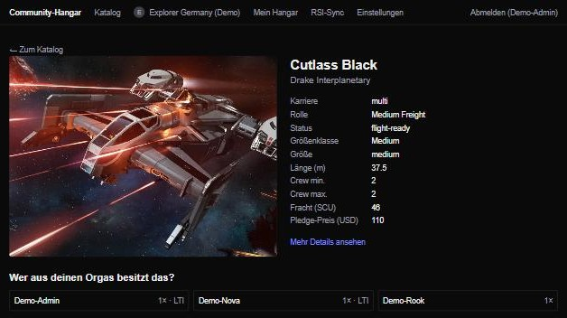
| Einstellung | Wirkung |
|---|---|
| Meine Orga(s) | Mitglieder jeder Orga, in der du bist, sehen deinen Hangar bzw. deine Errungenschaften im Profil und bei „Wer besitzt das?“. |
| Nur ich | Niemand außer dir sieht die Details. Deine Schiffe zählen trotzdem anonym im Orga Hangar mit. |
Über das Sonne-/Mond-Symbol in der Navigation wechselst du zwischen hellem und dunklem Design; die Wahl wird im Browser gemerkt.
Außerdem: Liste deiner Orgas mit „Mitgliedschaft jetzt prüfen“, „Orga anlegen“ (für Server-Admins), API-Tokens für eigene Skripte und „Konto löschen“.
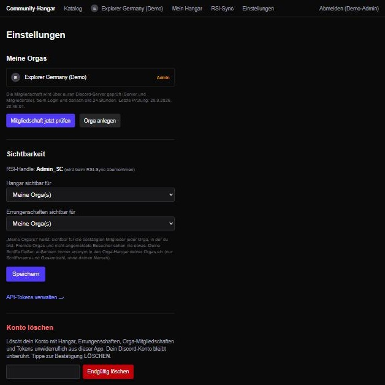
Eine Orga anlegen kann, wer auf dem Discord-Server der Orga Owner, Administrator ist oder das Recht „Server verwalten“ hat. Einen Bot braucht es nicht.
Unter Orga verwalten gibt es ein zweites Feld „Rollen-IDs der Planer“ (bis zu 5, eine davon genügt). Wer eine dieser Discord-Rollen hat, darf in der Planung Events anlegen und bearbeiten. Orga-Admins dürfen das immer. Ohne Eintrag planen nur Admins. Die ID findest du wie unten beschrieben. Rollenänderungen greifen nach spätestens 24 Stunden oder sofort über „Mitgliedschaft jetzt prüfen“ in den Einstellungen.
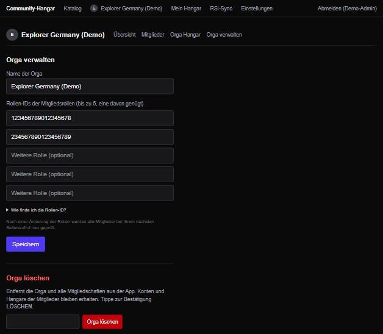
| Problem | Lösung |
|---|---|
| Nach dem Login sehe ich keine Orga. | Hast du auf Discord die Mitgliedsrolle? Hat ein Admin die Orga schon angelegt? Danach „Mitgliedschaft jetzt prüfen“. |
| Hinweis „Neu mit Discord anmelden“. | Die Discord-Freigabe ist abgelaufen oder fehlt. Einmal abmelden und neu anmelden. |
| Beim Sync öffnet sich kein Fenster. | Pop-ups für robertsspaceindustries.com erlauben (Symbol rechts in der Adressleiste) und das Lesezeichen erneut anklicken. |
| Das Fenster meldet „nicht angemeldet“. | Im Community-Hangar anmelden, dann das Lesezeichen auf der RSI-Seite noch einmal anklicken. |
| „Keine Pledges gefunden“. | Auf RSI angemeldet sein und die Pledge-Seite (My Hangar) geöffnet haben. Hat RSI die Seite umgebaut, muss das Lesezeichen angepasst werden. |
| Ich habe einen Eintrag entfernt, und er ist nach dem Sync wieder da. | Importierte Einträge stammen von RSI und kommen mit jedem Sync zurück. Manuell Hinzugefügtes bleibt dagegen erhalten. |
| Ein Schiff fehlt oder heißt anders. | Nicht erkannte Schiffe werden mit ihrem RSI-Namen übernommen und nach der nächsten Katalog-Aktualisierung automatisch zugeordnet. |
| Ich sehe in der Planung keinen Knopf „Event anlegen“. | Anlegen dürfen nur Admins und Mitglieder mit Planer-Rolle. Hat ein Orga-Admin die Rolle eingetragen und hast du sie auf Discord, dann in den Einstellungen „Mitgliedschaft jetzt prüfen“. |
| Das Briefing ist in mehrere Teile geteilt. | Discord erlaubt pro Nachricht etwa 2000 Zeichen. Die Teile nacheinander kopieren und posten. |
| Im Orga-Filter gibt es eine Karriere doppelt (z. B. „Combat“). | Behoben: Groß- und Kleinschreibung werden vereinheitlicht. |
Der Community-Hangar wird als fertiger Docker-Stack ausgeliefert. Eine Instanz reicht für beliebig viele Orgas; jede Orga legt sich selbst über ihren Discord-Server an (Abschnitt 8). Als Webadmin füllst du nur eine Einstellungsdatei aus und startest den Stack. Alles andere erledigt der Container selbst.
hangar.example.de, die per DNS auf den
Server zeigt. Die Ports 80 und 443 müssen aus dem Internet erreichbar sein.
HTTPS ist Pflicht, weil Discord nur https://-Adressen akzeptiert; das
Zertifikat holt der Stack automatisch.discord.com/developers/applications öffnen → New Application, Namen
vergeben.https://hangar.example.de/api/auth/callback/discordEinen Bot braucht es nicht.
Gebraucht werden nur zwei Dateien. Ihr vollständiger Inhalt steht im Anhang dieser Anleitung. In einem leeren Ordner auf dem Server zwei Textdateien anlegen, den Inhalt aus dem Anhang hineinkopieren und so speichern:
docker-compose.yml (Anhang A): unverändert übernehmen. Die Einrückungen mit
Leerzeichen müssen erhalten bleiben..env (Anhang B): diese drei Einträge ausfüllen.| Eintrag | Wert |
|---|---|
DOMAIN | die Adresse ohne https://, z. B. hangar.example.de |
AUTH_DISCORD_ID | Client ID aus Schritt 1 |
AUTH_DISCORD_SECRET | Client Secret aus Schritt 1 |
docker compose up -d
In Portainer o. Ä. die Compose-Datei als Stack anlegen und die drei Einträge als Umgebungsvariablen setzen. Beim ersten Start passiert automatisch:
hangar-data) und bei Updates migrieren,Nach ein bis zwei Minuten ist die App unter der Domain erreichbar. Fehlt eine Angabe in der
.env, bricht der Container mit einer klaren Meldung ab
(docker compose logs app).
Der Betreiber der Instanz bekommt einen eigenen Bereich Server-Admin (Eintrag in der
Navigation, Adresse /admin). Er ist fest an eine Discord-ID gebunden, die du in
der .env einträgst:
SERVER_ADMIN_DISCORD_ID=123456789012345678
.env ändern und
docker compose up -d ausführen. Ein Neubau ist nicht nötig, Daten bleiben erhalten.
Mehrere IDs lassen sich mit Komma trennen, etwa für eine Übergabe. Die Person muss sich einmal
mit Discord angemeldet haben.Im Bereich Server-Admin:
| Aufgabe | So geht's |
|---|---|
| Update einspielen | docker compose pull && docker compose up -d
(Datenbank wird automatisch migriert) |
| Sicherung | Das Volume hangar-data sichern; es enthält die komplette
Datenbank hangar.db und den Sitzungsschlüssel. |
| Protokolle ansehen | docker compose logs -f app |
| Eigener Reverse-Proxy vorhanden (Traefik, Nginx Proxy Manager) | Den Dienst
caddy aus der Compose-Datei entfernen und bei app den Port 3000
freigeben (steht als Kommentar in der Datei). Der Proxy leitet dann
https://DOMAIN auf Port 3000 weiter. |
Der Quellcode liegt in einem privaten Repository und ist auf Anfrage beim Ersteller
erhältlich. Mit Node.js 22: Code entpacken, .env nach Vorlage .env.example
anlegen (zusätzlich AUTH_URL="https://DOMAIN"), dann npm ci,
npx prisma migrate deploy, npm run build,
npm run catalog:sync und npm start (Port 3000, als Dienst einrichten,
HTTPS über einen Reverse-Proxy). Details stehen in der README.md.
src/app/datenschutz/page.tsx). Vor dem Start Verantwortlichen, Kontakt und
Hoster eintragen und den Text prüfen lassen; die App verarbeitet Discord-Daten anderer
Personen.Als docker-compose.yml speichern. Hier muss nichts angepasst werden, die Domain
kommt aus der .env.
services:
app:
image: ghcr.io/mackedanz/community-hangar:latest
restart: unless-stopped
env_file: .env
environment:
AUTH_URL: https://${DOMAIN}
# Server-Admin (Discord-ID, mehrere mit Komma); Wechsel: in .env ändern,
# dann docker compose up -d
SERVER_ADMIN_DISCORD_ID: ${SERVER_ADMIN_DISCORD_ID:-}
volumes:
- hangar-data:/data
# Ohne den Caddy-Dienst unten (eigener Reverse-Proxy vorhanden)
# stattdessen den Port freigeben:
# ports:
# - "3000:3000"
# HTTPS mit automatischem Let's-Encrypt-Zertifikat. Die Domain muss per
# DNS auf diesen Server zeigen, Port 80 und 443 müssen erreichbar sein.
caddy:
image: caddy:2-alpine
restart: unless-stopped
command: caddy reverse-proxy --from ${DOMAIN} --to app:3000
ports:
- "80:80"
- "443:443"
volumes:
- caddy-data:/data
depends_on:
- app
volumes:
hangar-data:
caddy-data:
Als .env (mit Punkt am Anfang, ohne Endung) im selben Ordner speichern und die
leeren Einträge ausfüllen. Diese Datei enthält das Discord-Secret: nicht weitergeben.
# Öffentliche Adresse ohne https://, z. B. hangar.example.de DOMAIN= # Discord Developer Portal -> eure Anwendung -> OAuth2 # Dort unter "Redirects" eintragen: https://<DOMAIN>/api/auth/callback/discord AUTH_DISCORD_ID= AUTH_DISCORD_SECRET= # Optional: eigener Sitzungsschlüssel. Leer lassen, dann wird er beim ersten # Start erzeugt und im Datenvolume gespeichert. AUTH_SECRET= # Discord-ID des Betreibers: nur dieser Nutzer sieht den Bereich /admin. # Mehrere IDs mit Komma trennen. Leer = kein Admin-Bereich. SERVER_ADMIN_DISCORD_ID= # Optional: Katalog-Aktualisierung in Sekunden (Standard: einmal pro Woche) # CATALOG_SYNC_INTERVAL_SECONDS=604800